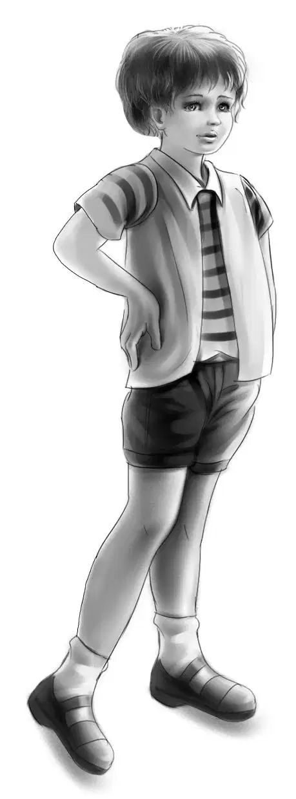
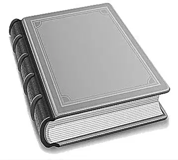
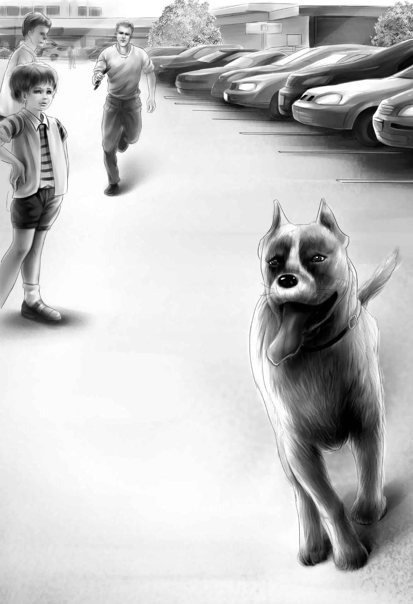
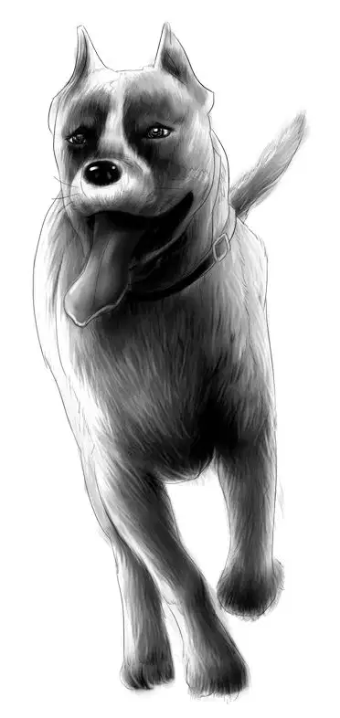
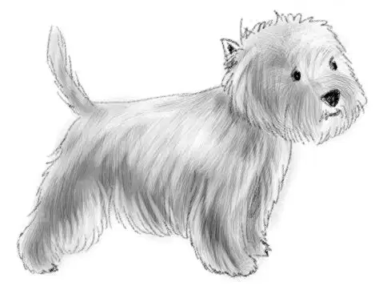

Catch as Catch Can

“我认得这个地方！”班尼突然叫了起来，“那边就是老灯塔，咱们那年夏天还住过的，记得么？”
“住在灯塔的日子好开心！”维莉说道。
“这说明，咱们离简姑婆家没有多少英里了。”亨利说。
孩子们齐齐地朝灯塔的方向望去，但脚下并没有停留。
刚一接近简姑婆的农舍，一阵狗叫声便响了起来。小影儿叫了几声作为回应。
“准是简姑婆家的狗狗——公主。”维莉说，“当初把公主送给简姑婆的时候，它还是只小奶狗呢！但愿小影儿不要和它打架。”
简姑婆和姑爷爷安迪已经站在门廊里，冲他们挥手了。
“你们总算来了，真是太好啦！”简姑婆说，“我们都张望好一阵子了，还是公主先看到了你们。”
“怎么还带了只小狗来？之前可没听你们说起过啊！”姑爷爷安迪问道。
亨利抱着小影儿，解释道：“咱们那时候还没遇上它呢！但愿两只狗狗不要打架才好。”说着，他把小影儿放在草地上，两只狗狗同时摇起了尾巴，虽然汪汪地叫个不停，神色间却显得很是友好。
接着，兄妹们将小狗的来历讲述了一遍。
“小影儿，到这儿来！让我看看。”姑爷爷安迪叫了一声，仔仔细细地打量起小狗来，“这是凯斯梗，这种狗来自苏格兰，产自于斯凯岛，有着三百多年的历史。”
“姑爷爷可真厉害，什么都知道。”班尼说。
“哪里，我只是去过的地方多一些而已。快去，把我书房里那本红色的字典拿来，那上面就有这种狗狗的照片，很漂亮的。”
很快，班尼取来了那本红色的字典。“还真是小影儿的同类呢，一点都不差。”他说，“等回家了，咱们就在报纸上写个这样的启事——寻凯斯梗主人……”

“它是怎么走丢的呢？”简姑婆问道。
“这恰好就是我们遇到的谜题哩，简姑婆。”杰西答道，“您也知道的，班尼不管到哪儿，都要寻个谜题才罢休。”
“不会是被人偷出来的吧？”姑爷爷安迪问道，“你们刚才说，它的脖子上没有项圈。”
“不清楚。”亨利答道，“不过，那对半路停车的夫妇倒真以为是我们偷的。”
“可不是么！竟然把我们当贼了！”班尼叫了起来。
“等你们弄清了真相，一定要把经过全告诉我。”简姑婆说，“我知道，你们眼下还没有半点头绪，而我更是一点忙也帮不上了。这不，你们的姑爷爷要飞到西班牙去，想让我陪着一道呢。”
“是啊！”姑爷爷安迪说道，“我走到哪里，你们的姑婆就跟到哪里。下午我就去机场买票。”
“四处旅行，这还真是姑爷爷的风格！”班尼感叹道。
“好啦，孩子们，咱们吃饭去吧！”姑爷爷说道，“午饭早就做好了，就等着你们来。”
“放心好了，简姑婆。”班尼说，“我的肚子早就空出来了。”
“知道啦，班尼先生！把你喂饱可不大容易呢。”简姑婆说道。班尼的胃口有多大，她心里最清楚不过了。
孩子们见到麦琪，心里别提有多高兴了——她可是简姑婆家的资深厨娘。这个中午，麦琪准备了一大份鸡蛋沙拉，几盘火腿，几杯牛奶，还有几份热腾腾的面包卷。
吃过午饭，杰西和维莉坐下来陪简姑婆聊天，亨利和班尼则跟着姑爷爷安迪去了机场，顺便带上了小影儿。正在停车的时候，姑爷爷突然叫道：“快看！”
原来是一只大狗蹿进了停车场，正在朝机场的方向狂奔，而它身后，一个男人在紧追不舍。
那是一条拳师犬。奥登兄妹一看便知，狗狗并不想被抓住，因此它的主人一点机会都没有。
“嗨！”班尼高声喊道，“快到这边来，我有办法。”
“班尼，不要吹牛！”亨利说道，“你又不认识这狗，怎么可能抓得住。”
“放心吧，”班尼说，“我想到了一个法子。”
只听男人喊道：“我可是一步也跑不动了！本来是忙着赶飞机的，却在这儿浪费了老半天时间！”

“别担心。”班尼叫道，“我来帮你。”说着，他走下姑爷爷的车子，把小影儿放了出来。小狗拔腿就想去追大狗，却被班尼喝止住了。
“不准动！”班尼一声令下，小影儿乖乖地蹲了下来。
“天啊！”陌生的男人不由感叹道，“我的狗要是这么听话该多好。”
“它会的，只要训练个几次就行。”班尼说道，“现在你先等一会儿，躲到小卡车后面去，别让狗狗看到了。把拴狗链准备好。”
此时，拳师犬留意到“追兵”已经消失，于是回头一看，刚好看见小影儿蹲在停车场里。
拳师犬摇了摇短短的尾巴，一路小跑着回去看这个陌生的小伙伴。
“准备好了吗？”班尼对拳师犬的主人说道，“等它们交上朋友，你就过去抓住它。”
拳师犬走到小影儿跟前，摇起了尾巴。小影儿一动不动，仅仅摇了几下尾巴作为回应。要知道，这个动作的难度可是不小，因为小影儿正坐在自己的尾巴上。

“我悄悄地过去。”男人低声说道。
“好。”班尼赞同道。一时间，大家都屏息凝视着，想看看那人能否顺利抓住拳师犬。
大狗正和小影儿玩得不亦乐乎，丝毫没有注意到主人的到来。只听咔嚓一声，链子已经扣到了它的项圈上。
“哈！抓住啦！”班尼叫了起来。
“这法子果然不错，班尼。”姑爷爷说，“想不到还真管用。”
“谢谢你，孩子！”男人感激不尽，“这下就不会错过航班了。”说着，他抱起大狗，放进了车里。
这一切都被旁观的一个女人看在眼里。“你们的小狗是一只凯斯梗，对不对？”她问亨利。
“对，应该是的。”亨利答道。
“它不是我们的狗狗。”班尼插了一句，“只是一直跟着我们而已。”
女人看了看班尼，说道：“我刚从波士顿回来，听我妹妹说，她的一个朋友恰好丢了只凯斯梗呢。”
班尼摇了摇头：“它绝对不是波士顿来的。不过我们会尽快找到它的主人。”
“祝你好运。”女人说道，“真是只漂亮的狗狗。”
当晚，简姑婆对孩子们说：“真希望你们能多待几天。不过我知道，你们更想回家去，解开小影儿主人这个谜团。”
“按照之前的计划，我们也只能待一晚的。”杰西说，“不过我们秋天还会过来，争取多待几天。”
第二天一早，奥登家的孩子们再次整装待发，麦琪又给他们准备了一份应急的口粮。“下次要早些过来，”她说，“有你们这群孩子和两只小狗陪着，我别提有多欢喜了！”
奥登兄妹登上自行车，在简姑婆和姑爷爷的挥手告别中出发了，公主摇着尾巴欢叫着，小影儿也汪汪了几声作为回应。
“老兄，我还是喜欢听你汪汪地叫。”班尼说道，“比你哼唧起来好听多了。”
小影儿一路遥遥领先，跑得比自行车还快。杰西见状说道：“它准是知道要回家了，心里美着呢！”
“或许它之前一直哼唧的原因是——知道咱们的方向走错了。”亨利说，“班尼，别让它跑太久，会把爪子磨破的。”
“我过会儿就让它上车。”班尼说道。大约过了半个小时，班尼果然抱起小影儿，把它放在车子的前筐里。

孩子们欢快地骑了半晌，情不自禁地放声高歌起来，曲调舒缓悠扬，只是少了吉他伴奏。这当儿，小影儿也扯起嗓子开嚎了。
班尼正模仿着吉他伴奏的“梆梆”声，听到小影儿的叫声，忍不住笑道：“你是在抗议我的吉他声吗？你这小家伙，居然还会嗷嗷叫哩！”说完，他又唱了起来。
一曲终了，小影儿顿时安静下来，它乖乖地坐在车筐里，一脸幸福的小模样，让班尼又忍俊不禁。
“你赢了，小影儿。”亨利叫道，“好吧，我们不唱，你也别嗷嗷了。”
就这样，孩子们一连骑了几个小时。突然，班尼猛地喊道：“看，前面有个十字路口，看起来车还真不少！”